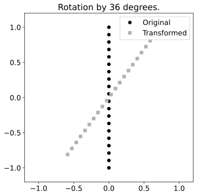
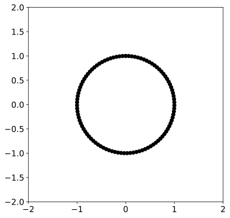
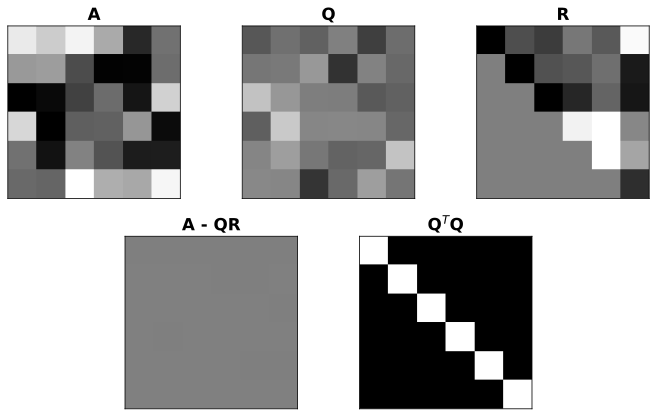

Vectors and Linear Equations, Elimination, Rules for Matrix Operations, Inverse Matrices, Factorization, Transposes and Permutations
Mathematics
template
Author
Kwangmin Kim
Published
March 31, 2023
Code
import numpy as npimport matplotlib.animation as animationimport matplotlib_inlineimport matplotlib.pyplot as pltfrom mpl_toolkits.mplot3d import Axes3Dimport sympy as sym # for RREFimport scipy.linalg # for LUimport matplotlib.gridspec as gridspec # used to create non-regular subplotsfrom scipy.linalg import lstsq # for least square example# NOTE: these lines define global figure properties used for publication.from IPython import displaymatplotlib_inline.backend_inline.set_matplotlib_formats('svg')#display.set_matplotlib_formats('svg') # display figures in vector formatplt.rcParams.update({'font.size':14}) # set global font size
1 Orthogonality
Orthogonality of the Four Subspaces
Orthogonal Vectors
Orthogonal Subspaces
Orthogonal Components
Orthogonal Matrices
orthogonal vector decomposition,
QR decomposition
‘Q’ stands for an orthogonal matrix, and
‘R’ stands for an upper triangular matrix.
LU decomposition,
eigendecomposition, and
singular value decomposition
1.1 Orthogonality of the Four Subspaces
The four subspaces: vectors, subspaces, orthogonal bases, and orthogonal matrices
1.1.1 Orthogonal Vectors
Definition 1 Two vectors \(\mathbf{v}\) and \(\mathbf{w}\) in \(\mathbb{R}^n\) are said to be orthogonal if their dot product is zero:
Geometrically, two vectors are orthogonal if they are perpendicular to each other.
Orthogonality is an important concept in linear algebra and has many applications, including in the construction of orthonormal bases and in least-squares regression.
1.1.1.1 Examples
Here are some examples of orthogonal vectors:
\(\mathbf{v} = \begin{bmatrix} 1 \\ 0 \\ 0 \end{bmatrix}\) and \(\mathbf{w} = \begin{bmatrix} 0 \\ 1 \\ 0 \end{bmatrix}\) are orthogonal because \(\mathbf{v} \cdot \mathbf{w} = 1 \cdot 0 + 0 \cdot 1 + 0 \cdot 0 = 0\). These vectors are also perpendicular to each other in 3D space.
\(\mathbf{v} = \begin{bmatrix} 1 \\ 1 \\ 1 \end{bmatrix}\) and \(\mathbf{w} = \begin{bmatrix} 1 \\ -2 \\ 1 \end{bmatrix}\) are orthogonal because \(\mathbf{v} \cdot \mathbf{w} = 1 \cdot 1 + 1 \cdot (-2) + 1 \cdot 1 = 0\). These vectors are also perpendicular to each other in 3D space.
\(\mathbf{v} = \begin{bmatrix} 1 \\ 2 \end{bmatrix}\) and \(\mathbf{w} = \begin{bmatrix} -2 \\ 1 \end{bmatrix}\) are orthogonal because \(\mathbf{v} \cdot \mathbf{w} = 1 \cdot (-2) + 2 \cdot 1 = 0\). These vectors are also perpendicular to each other in 2D space.
Orthogonal vectors have a dot product of zero: \[
\mathbf{v} \cdot \mathbf{w} = 0
\]
The magnitude (length) of the projection of a vector onto an orthogonal vector is given by: \[
\text{proj}_{\mathbf{w}}(\mathbf{v}) = \frac{\mathbf{v} \cdot \mathbf{w}}{\|\mathbf{w}\|^2} \mathbf{w} = 0
\]
The Pythagorean theorem holds for orthogonal vectors: \[
\|\mathbf{v} + \mathbf{w}\|^2 = \|\mathbf{v}\|^2 + \|\mathbf{w}\|^2
\]
The angle between two orthogonal vectors is \(\frac{\pi}{2}\) radians or \(90\) degrees: \[
\theta = \frac{\pi}{2}
\]
Orthogonal vectors are linearly independent, which means that no vector in the span of one vector can be expressed as a linear combination of the other vector: \[
\text{span}\{\mathbf{v}\} \cap \text{span}\{\mathbf{w}\} = \{\mathbf{0}\}
\]
The row space is perpendicular to the nullspace
The column space is perpendicular to the nullspace of \(\mathbf{A}^T\).
This peroperty plays a key role in solving the equation \(\mathbf{Ax=b}\) but \(\mathbf{b}\) is outside the column space (meaning we can’t solve the equation directly). In this case, we use the nullspace of \(\mathbf{A}^T\) to find the “least-squares” solution, which gives us the smallest possible error \(\mathbf{e = b - Ax}\) in our solution.
Note
When \(\mathbf{b}\) is outside the column space of \(\mathbf{A}\), there is no exact solution to the equation \(\mathbf{Ax = b}\). Instead, we seek a solution that minimizes the error \(\mathbf{e = b - Ax}\). The least-squares solution achieves this by finding the projection of \(\mathbf{b}\) onto the column space of \(\mathbf{A}\). It turns out that the projection of \(\mathbf{b}\) onto the column space of \(\mathbf{A}\) is exactly equal to the solution of the equation \(\mathbf{A}^T\mathbf{Ax} = \mathbf{A}^T\mathbf{b}\), which can be solved using the nullspace of \(\mathbf{A}^T\).
In summary, the statement “the column space is perpendicular to the nullspace of \(\mathbf{A}^T\)” tells us that the column space and nullspace are orthogonal (i.e., perpendicular) subspaces, and this fact allows us to use the nullspace of \(\mathbf{A}^T\) to find the least-squares solution to \(\mathbf{Ax = b}\).
1.1.1.2.1 Example
Suppose we have a system of equations \(\mathbf{Ax} = \mathbf{b}\) where \(\mathbf{A}\) is an \(m \times n\) matrix and \(\mathbf{b}\) is an \(m \times 1\) vector, and we want to find the least squares solution to this system (i.e., the solution that minimizes the residual \(|\mathbf{Ax} - \mathbf{b}|\)). If \(\mathbf{A}\) has linearly independent columns, then we can solve for \(\mathbf{x}\) using the formula \(\mathbf{x} = (\mathbf{A}^T\mathbf{A})^{-1}\mathbf{A}^T\mathbf{b}\). However, if \(\mathbf{A}\) does not have linearly independent columns, then we can use the fact that the column space of \(\mathbf{A}\) is perpendicular to the nullspace of \(\mathbf{A}^T\) to find the least squares solution.
To do this, we first find a basis for the column space of \(\mathbf{A}\) and a basis for the nullspace of \(\mathbf{A}^T\). Let \(\mathbf{P}\) be the projection matrix onto the column space of \(\mathbf{A}\), given by \(\mathbf{P} = \mathbf{A}(\mathbf{A}^T\mathbf{A})^{-1}\mathbf{A}^T\). Then the least squares solution to \(\mathbf{Ax} = \mathbf{b}\) is given by \(\mathbf{x} = \mathbf{P}\mathbf{b}\), and the residual \(\mathbf{e} = \mathbf{b} - \mathbf{Ax}\) is in the nullspace of \(\mathbf{A}^T\).
Code
# Define the matrix A and the vector bA = np.array([[1, 2, 3], [4, 5, 6], [7, 8, 9], [10, 11, 12]])b = np.array([1, 2, 3, 4])# Compute the least-squares solution using lstsq from SciPyx, res, rank, s = lstsq(A, b)# Compute the error e = b - Axe = b - A @ x # matrix multiplication# Compute the projection of b onto the column space of AProjected_b = A @ x# Compute the projection of b onto the orthogonal complement of the column space of AProjected_b_perp = b - Projected_b# Compute the projection of e onto the nullspace of A^TProjected_e = np.linalg.pinv(A.T).T @ e'''The expected value of Projected_e = np.linalg.pinv(A.T) @ e is the projection of the true value x onto the column space of A. This is because the least squares solution x_hat is the orthogonal projection of the vector b onto the column space of A, which is given by x_hat = A @ np.linalg.lstsq(A, b)[0].Since e = b - Ax_hat is the error in the least squares solution, np.linalg.pinv(A.T) @ e computes the projection of this error vector onto the nullspace of A^T. Therefore, the expected value of Projected_e is zero, since the error e is orthogonal to the column space of A and its projection onto the nullspace of A^T is also orthogonal to the column space of A.In other words, Projected_e is the component of the error e that lies in the nullspace of A^T, and since the nullspace of A^T is orthogonal to the column space of A, the expected value of Projected_e is zero.'''# Compute the projection of e onto the orthogonal complement of the nullspace of A^TProjected_e_perp = e - A @ Projected_e# Verify that the column space is perpendicular to the nullspace of A^Tassert np.allclose(A @ Projected_e, np.zeros((A.shape[0],)))#assert np.allclose(Projected_e_perp @ x, np.zeros((x.shape[0],)))
In this example, we define the matrix A and the vector b, and use the lstsq function from SciPy to compute the least-squares solution x. We then compute the error e = b - Ax, and project b onto the column space of A to obtain Pb, and onto the orthogonal complement of the column space of A to obtain Pb_perp. We also project e onto the nullspace of A^T to obtain Pe, and onto the orthogonal complement of the nullspace of A^T to obtain Pe_perp. Finally, we verify that the column space of A is perpendicular to the nullspace of A^T by checking that A^TPe = 0 and Pe_perp x = 0.
Code
# define the matrix A and vector bA = np.array([[1, 1], [1, -1], [2, 1], [2, -1]])b = np.array([3, 1, 5, 3])# calculate the least-squares solutionx = np.linalg.lstsq(A, b, rcond=None)[0]# create a figure with a 3D axes objectfig = plt.figure()ax = fig.add_subplot(111, projection='3d')# plot the points in the column space of Ax1 = np.linspace(-1, 3, 10)x2 = np.linspace(-1, 3, 10)X1, X2 = np.meshgrid(x1, x2)Y = x[0]*X1 + x[1]*X2ax.plot_surface(X1, X2, Y, alpha=0.2)# plot the points in the nullspace of A^Tx1 = np.linspace(-1, 3, 10)x3 = np.linspace(-1, 3, 10)X1, X3 = np.meshgrid(x1, x3)Y = np.zeros_like(X1)Z = x[0]*X1 + x[1]*Y + x[2]*X3ax.plot_surface(X1, Y, X3, color='red', alpha=0.2)# plot the data points and the least-squares solutionax.scatter(A[:,0], A[:,1], b, color='blue', marker='o', s=50)ax.scatter(x[0], x[1], x[2], color='green', marker='*', s=100)# set the axis labels and limitsax.set_xlabel('x1')ax.set_ylabel('x2')ax.set_zlabel('b')ax.set_xlim(-1, 3)ax.set_ylim(-1, 3)ax.set_zlim(0, 6)# show the plotplt.show()
1.1.2 Orthogonal Subspaces
Definition 2 Two subspaces \(U\) and \(V\) of a vector space \(W\) are said to be orthogonal subspaces if every vector in \(U\) is orthogonal to every vector in \(V\). Symbolically, we write \(U \perp V\) if and only if \(\mathbf{u} \cdot \mathbf{v} = 0\) for all \(\mathbf{u} \in U\) and \(\mathbf{v} \in V\).
\[
\mathbf u^T \mathbf v = 0
\]
Every vector \(\mathbf{x}\) in the nullspace is perpendicular to every row of \(\mathbf{A}\), because \(\mathbf{Ax=0}\) The \(\operatorname{null}(\mathbf{A})\) and the row space \(\operatorname{Col}(\mathbf{A}^T)\) are orthogonal subspaces of \(\mathbb{R}^n\)
Every vector \(\mathbf{y}\) in the nullspace of \(\mathbf{A}^T\) is perpendicular to every column of \(\mathbf{A}\). The left \(\operatorname{null}(\mathbf{A}^T)\) and the column space \(\operatorname{Col}(\mathbf{A})\) are orthogonal subspaces in \(\mathbb{R}^n\)
1.1.2.1 Examples
Let \(\mathbf{v} = \begin{bmatrix} 1 \\ 0 \\ 1 \end{bmatrix}\) and \(\mathbf{w} = \begin{bmatrix} 0 \\ 1 \\ -1 \end{bmatrix}\) be two vectors in \(\mathbb{R}^3\). Then the subspaces \(U = \text{span}{\mathbf{v}}\) and \(V = \text{span}{\mathbf{w}}\) are orthogonal subspaces, since \(\mathbf{v} \cdot \mathbf{w} = 0\).
Let \(U\) be the subspace of \(\mathbb{R}^3\) spanned by the vectors \(\begin{bmatrix} 1 \\ 2 \\ 0 \end{bmatrix}\) and \(\begin{bmatrix} 1 \\ 0 \\ -1 \end{bmatrix}\), and let \(V\) be the subspace spanned by the vector \(\begin{bmatrix} 2 \\ -1 \\ 1 \end{bmatrix}\). Then \(U\) and \(V\) are orthogonal subspaces, since every vector in \(U\) is orthogonal to every vector in \(V\).
Let \(U\) and \(V\) be the subspaces of \(\mathbb{R}^2\) spanned by the vectors \(\begin{bmatrix} 1 \ 1 \end{bmatrix}\) and \(\begin{bmatrix} 1 \ -1 \end{bmatrix}\), respectively. Then \(U\) and \(V\) are not orthogonal subspaces, since \(\begin{bmatrix} 1 \ 1 \end{bmatrix} \cdot \begin{bmatrix} 1 \ -1 \end{bmatrix} \neq 0\).
\[
U = \text{span}\left\{\begin{bmatrix} 1 \\ 1 \end{bmatrix}\right\}, \quad
V = \text{span}\left\{\begin{bmatrix} 1 \\ -1 \end{bmatrix}\right\}
\]
The vectors \(\mathbf{v}\) and \(\mathbf{w}\) are in blue and red, respectively, and the subspaces \(U\) and \(V\) as dashed lines with corresponding colors. Since \(\mathbf{v} \cdot \mathbf{w} = 0\), the subspaces are orthogonal.
1.1.3 Orthogonal Complements
Given a subspace \(V\) of a vector space \(W\), we can decompose any vector \(\mathbf{w} \in W\) into two orthogonal components, one in \(V\) and one in the orthogonal complement of \(V\).
Definition 3 Let \(V\) be a subspace of a vector space \(W\). The orthogonal complement of \(V\), denoted by \(V^\perp\), is the set of all vectors in \(W\) that are orthogonal to every vector in \(V\). That is, the orthogonal complement of \(V\) is the set of vectors \(\mathbf w \in W\) such that the inner product between \(\mathbf w\) and any vector \(\mathbf v \in V\) is equal to zero: \[
V^\perp = \{ \mathbf w \in W | \langle \mathbf w,\mathbf v \rangle = 0, \forall \mathbf v \in V \}.
\]
where \(V^\perp\) represents the orthogonal complement of the subspace \(V\), \(w\) and \(v\) are vectors in the subspaces \(W\) and \(V\) respectively, and \(\langle\) and \(\rangle\) denote the inner product between two vectors.
We can then decompose any vector \(\mathbf{w} \in W\) into two orthogonal components as follows: \[
\mathbf w = \mathbf w_{V} +\mathbf w_{V^{\perp}}
\]
where \(\mathbf{w}_{V}\) is the orthogonal projection of \(\mathbf{w}\) onto \(V\), and \(\mathbf{w}_{V^\perp}\) is the orthogonal projection of \(\mathbf{w}\) onto \(V^\perp\).
If \(\mathbf v\) is orthogonal to the nullspace, it must be in the row space.
1.1.3.1 Example
Let \(W = \mathbb{R}^3\) and \(V\) be the subspace spanned by the vectors \(\mathbf{v}_1 = (1,0,0)\) and \(\mathbf{v}_2 = (0,1,1)\). Then, we can find a basis for \(V^\perp\) by solving the system of equations
\[
\begin{bmatrix} 1 & 0 & 0 \\ 0 & 1 & 1 \end{bmatrix} \begin{bmatrix} x \\ y \\ z \end{bmatrix} = \begin{bmatrix} 0 \\ 0 \end{bmatrix}
\]
This gives us the solution \(x = 0\), \(y = 0\), \(z = 0\), so \(V^\perp\) is the subspace spanned by the vector \(\mathbf{w} = (0,0,1)\). we have a \(2\times 3\) matrix multiplying a \(3\times 1\) vector, resulting in a \(2\times 1\) vector. This means that the equation is restricting the first two coordinates of the vector to be zero.
Therefore, we can consider the subspace \(V\) to be the \(xy\)-plane in \(\mathbb{R}^3\), i.e., \(V = {(x,y,z) \in \mathbb{R}^3 : z = 0}\). Then, the orthogonal complement \(V^\perp\) is the set of all vectors that are orthogonal to every vector in \(V\). In this case, we can see that \(\begin{bmatrix} 0 \\ 0 \\ 1 \end{bmatrix}\) is perpendicular to every vector in \(V\), since its third coordinate is always \(1\) while the third coordinate of any vector in \(V\) is always \(0\). Therefore, \(V^\perp\) is the subspace spanned by \(\begin{bmatrix} 0 \\ 0 \\ 1 \end{bmatrix}\), which is the \(z\)-axis in \(\mathbb{R}^3\).
Now, given any vector \(\mathbf{w} \in \mathbb{R}^3\), we can decompose it into two orthogonal components as
\[
\mathbf w = \mathbf w_{V} +\mathbf w_{V^{\perp}}
\]
where \(\mathbf{w}V\) is the projection of \(\mathbf{w}\) onto \(V\), and \(\mathbf{w}{V^\perp}\) is the projection of \(\mathbf{w}\) onto \(V^\perp\). For example, if \(\mathbf{w} = (1,2,3)\), We can compute the projections \(\mathbf{w}V\) and \(\mathbf{w}{V^\perp}\) as follows:
The projection of \(\mathbf{w}\) onto \(V\) is given by
Therefore, we have decomposed \(\mathbf{w}\) into two orthogonal components as \(\mathbf{w} = \begin{bmatrix} 1 \\ 0 \\ 0 \end{bmatrix} + \begin{bmatrix} 0 \\ 2 \\ 3 \end{bmatrix}\).
The Fundamental Theorem of Linear Algebra states that for a given matrix \(\mathbf A\), the column space of \(\mathbf A\) and the null space of \(\mathbf A\) are orthogonal complements of each other. In other words, every vector in the null space of \(\mathbf A\) is orthogonal to every vector in the column space of \(\mathbf A\), and vice versa. This means that any vector in the domain of \(\mathbf A\) can be uniquely decomposed as the sum of a vector in the column space and a vector in the null space.
Theorem 1 Let \(\mathbf A\) be an \(m\times n\) matrix over \(\mathbb{R}\). Then,
The column space of \(\mathbf A\), denoted \(C(\mathbf A)\), is a subspace of \(\mathbb{R}^m\).
The null space of \(\mathbf A\), denoted \(N(\mathbf A)\), is a subspace of \(\mathbb{R}^n\).
The orthogonal complement of \(C(\mathbf A)\), denoted \(C(\mathbf A)^\perp\), is equal to \(N(\mathbf A)\).
The orthogonal complement of \(N(\mathbf A)\), denoted \(N(\mathbf A)^\perp\), is equal to \(C(\mathbf A)\).
In other words, we have the following orthogonal decomposition of \(\mathbb{R}^n\): \[
\mathbb R^n = N(\mathbf A) \oplus C(\mathbf A)^\perp
\]
and the following orthogonal decomposition of \(\mathbb{R}^m\):
\[
\mathbb R^m = C(\mathbf A) \oplus N(\mathbf A)^\perp
\]
where \(\oplus\) denotes the direct sum of subspaces.
1.1.3.2 Exmaple
Example1 Let \(\mathbf A\) be an \(m \times n\) matrix with rank \(r\). Then, \(\mathbb{R}^n\) can be decomposed as \(\mathbb{R}^n = N(\mathbf A) \oplus N(\mathbf A)^{\perp}\), where \(N(\mathbf A)\) is the null space of \(\mathbf A\), \(N(\mathbf A)^{\perp}\) is its orthogonal complement, and \(\oplus\) denotes the direct sum. This means that any vector \(\mathbf{v} \in \mathbb{R}^n\) can be written uniquely as \(\mathbf{v} = \mathbf{v}_1 + \mathbf{v}_2\), where \(\mathbf{v}_1 \in N(\mathbf A)\) and \(\mathbf{v}_2 \in N(\mathbf A)^{\perp}\).
Example2 Let \(\mathbf A\) be an \(m \times n\) matrix with rank \(r\). Then, the column space of \(\mathbf A\), denoted \(C(\mathbf A)\), is equal to the orthogonal complement of the null space of \(\mathbf A^T\), i.e., \(C(\mathbf A) = N(\mathbf A^T)^{\perp}\).
Example3 Let \(\mathbf A\) be an \(m \times n\) matrix with rank \(r\), and let \(\mathbf{b} \in \mathbb{R}^m\) be a vector. Then, the system of linear equations \(A\mathbf{x} = \mathbf{b}\) has a solution if and only if \(\mathbf{b} \in C(\mathbf A)\). Moreover, if \(\mathbf{x}_0\) is a particular solution to \(\mathbf A\mathbf{x} = \mathbf{b}\), then the set of all solutions is given by \({\mathbf{x}_0 + \mathbf{v} : \mathbf{v} \in N(\mathbf A)}\), i.e., it is the affine space consisting of \(\mathbf{x}_0\) plus the null space of \(\mathbf A\).
Example4 Every diagonal matrix \(\mathbf D\) has a diagonal submatrix consisting of its first \(r\) diagonal entries that is \(r \times r\) and invertible for any \(r\) between \(1\) and the size of \(\mathbf D\). For example, consider the diagonal matrix \(\mathbf D = \begin{bmatrix} 2 & 0 & 0 \\ 0 & 3 & 0 \\ 0 & 0 & 4 \end{bmatrix}\). The \(2 \times 2\) diagonal submatrix consisting of the first two diagonal entries, \(\mathbf D' = \begin{bmatrix} 2 & 0 \\ 0 & 3 \end{bmatrix}\), is invertible since its diagonal entries are nonzero. Similarly, the \(3 \times 3\) diagonal submatrix consisting of all the diagonal entries, \(\mathbf D'' = \begin{bmatrix} 2 & 0 & 0 \\ 0 & 3 & 0 \\ 0 & 0 & 4 \end{bmatrix}\), is also invertible since all of its diagonal entries are nonzero. This example illustrates the fact that every diagonal matrix has an invertible diagonal submatrix of any size between \(1\) and the size of the matrix.
Example5 Consider the matrix \(A=\begin{bmatrix}1 & 2 & 3 \\ 4 & 5 & 6 \end{bmatrix}\). We want to find the right bases for \(\mathbb{R}^2\) and \(\mathbb{R}^3\) such that \(A\) becomes a diagonal matrix.
The eigenvalues of \(A^TA\) are \(\lambda_1 = 0\), \(\lambda_2 = 1\), and \(\lambda_3 = 90\). We can find the corresponding eigenvectors as follows:
For \(\lambda_1 = 0\), we solve \((A^TA - \lambda_1 I)v = 0\), which gives us the equation \(17x + 22y + 27z = 0\). One possible eigenvector is \(\begin{bmatrix} -2 \\ 1 \\ 0 \end{bmatrix}\).
For \(\lambda_2 = 1\), we solve \((A^TA - \lambda_2 I)v = 0\), which gives us the equation \(16x + 20y + 24z = 0\). One possible eigenvector is \(\begin{bmatrix} 3 \\ -2 \\ 0 \end{bmatrix}\).
For \(\lambda_3 = 90\), we solve \((A^TA - \lambda_3 I)v = 0\), which gives us the equation \(-2x + y + z = 0\). One possible eigenvector is \(\begin{bmatrix} 1 \\ 2 \\ -1 \end{bmatrix}\).
We normalize these eigenvectors to obtain an orthonormal basis for \(\mathbb{R}^3\):
where \(v_1=\begin{bmatrix} 0.2673 \\ 0.5345 \\ 0.8018 \end{bmatrix}\).
Therefore, we can take \(v_1\) as the first column of the matrix \(V\), and the normalized eigenvectors \(v_2\) and \(v_3\) as the second and third columns of \(V\), respectively. Then we can define \(U=AV\Sigma^{-1}\), where \(\Sigma\) is the diagonal matrix with the square roots of the nonzero eigenvalues of \(A^TA\) as its entries.
< 여기서 부터 다시 볼것> Thus, we have
\[
A = U\Sigma V^T = \begin{bmatrix} -0.231 \ \ \ 0.9730 \\ -0.5253 \ \ \ 0.0806 \\ -0.8196 -0.9195 \end{bmatrix} \begin{bmatrix} 9.4868 & 0 & 0 \\ 0 & 1 & 0 \\ 0 & 0 & 0 \end{bmatrix} \begin{bmatrix} -0.2673 \ \ \ 0.5345 \ \ \ 0.8018 \\ -0.6931 \ \ \ -0.1184 \ \ \ 0.7107 \\ -0.6646 \ \ \ 0.7774 \ \ \ -0.2774 \end{bmatrix}.
\] This gives us the diagonalization \(A=QDQ^{-1}\), where \(Q=U\Sigma\) and \(D=V^T\). Therefore, by choosing the appropriate bases for \(\mathbb{R}^2\) and \(\mathbb{R}^3\) given by the columns of \(Q\), we can make \(A\) a diagonal matrix.
This is known as the Singular Value Decomposition (SVD) of \(A\). The diagonal matrix \(\Sigma\) contains the singular values of \(A\), which are the square roots of the eigenvalues of \(A^TA\). These values represent the importance of the corresponding singular vectors in the matrix \(A\).
The SVD can be used for a variety of applications, including data compression, dimensionality reduction, and image processing. It is also used in machine learning and data science for tasks such as collaborative filtering, recommender systems, and principal component analysis.
1.1.4 Combining bases from Subspaces
Any $n$ independent vectors in $\mathbf R^n$ must span $\mathbf R^n$. So, they are a basis.
In \(\mathbf R^n\), a set of \(n\) independent vectors is said to span \(\mathbf R^n\) if any vector in \(\mathbf R^n\) can be expressed as a linear combination of these \(n\) vectors. This means that the \(n\) vectors are sufficient to represent any vector in \(\mathbf R^n\).
To see why this is the case, consider that any vector in \(\mathbf R^n\) can be represented as a column vector with \(n\) entries. By definition, each entry can be written as a linear combination of the entries of the \(n\) independent vectors. Therefore, the entire column vector can be expressed as a linear combination of the \(n\) independent vectors. Since this is true for any vector in \(\mathbf R^n\), the set of \(n\) independent vectors must span \(\mathbf R^n\).
Moreover, if a set of \(n\) independent vectors spans \(\mathbf R^n\), then they are a basis for \(\mathbf R^n\). This means that the \(n\) vectors are linearly independent and also span \(\mathbf R^n\). By definition, a basis is a set of vectors that can be used to represent any vector in a space and that is linearly independent. So, any set of \(n\) independent vectors that spans \(\mathbf R^n\) is a basis for \(\mathbf R^n\).
Any $n$ vectors that span $\mathbf R^n$ must be independent. So, they are a basis.
Let \({v_1,v_2,\dots,v_n}\) be a set of \(n\) vectors that span \(\mathbf R^n\). This means that any vector \(\mathbf x\) in \(\mathbf R^n\) can be expressed as a linear combination of the vectors in \({v_1,v_2,\dots,v_n}\), i.e., there exist scalars \(a_1,a_2,\dots,a_n\) such that \(\mathbf x = a_1v_1+a_2v_2+\cdots+a_nv_n\).
Now suppose that the vectors in \({v_1,v_2,\dots,v_n}\) are not independent. Then there exist scalars \(b_1,b_2,\dots,b_n\), not all zero, such that \(b_1v_1+b_2v_2+\cdots+b_nv_n=\mathbf 0\), where \(\mathbf 0\) denotes the zero vector in \(\mathbf R^n\).
We can rewrite this equation as \(a_1v_1+a_2v_2+\cdots+a_nv_n=\mathbf 0\), where \(a_i=-b_i\) for \(i=1,2,\dots,n\). But this implies that the vector \(\mathbf x=\mathbf 0\) can be expressed as a nontrivial linear combination of the vectors in \({v_1,v_2,\dots,v_n}\), which contradicts the assumption that these vectors span \(\mathbf R^n\).
Therefore, the vectors \({v_1,v_2,\dots,v_n}\) must be independent. Since they span \(\mathbf R^n\), they form a basis for \(\mathbf R^n\).
If the $n$ columns of $\mathbf A$ are independent, they span $\mathbf R^n$. So Ax=b is solvable
If the \(n\) columns of a matrix \(\mathbf A\) are independent, then they span \(\mathbf R^n\), which means that any vector \(\mathbf b\) in \(\mathbf R^n\) can be expressed as a linear combination of the columns of \(\mathbf A\).
Suppose we have a system of linear equations \(\mathbf{Ax} = \mathbf{b}\). If the columns of \(\mathbf A\) are independent, then we can find a unique linear combination of the columns that equals \(\mathbf b\). In other words, we can solve the system of equations for \(\mathbf x\). This means that \(\mathbf{Ax} = \mathbf{b}\) is solvable for any vector \(\mathbf b\) in \(\mathbf R^n\).
Therefore, if the columns of \(\mathbf A\) are independent, the equation \(\mathbf{Ax} = \mathbf{b}\) is solvable for any \(\mathbf b \in \mathbf R^n\), and the columns of \(\mathbf A\) form a basis for \(\mathbf R^n\).
If the $n$ columns span $\mathbf R^n$, they are independent. So $\mathbf{Ax=b}$ has only one solution.
If the \(n\) columns of \(\mathbf A\) span \(\mathbf R^n\), it means that any vector in \(\mathbf R^n\) can be expressed as a linear combination of those columns. Mathematically, if we denote the \(n\) columns of \(\mathbf A\) as \(\mathbf a_1, \mathbf a_2, \dots, \mathbf a_n\), then for any vector \(\mathbf b \in \mathbf R^n\), there exist scalars \(x_1, x_2, \dots, x_n\) such that:
Now, let’s assume that the columns of \(\mathbf A\) are not independent. This means that there exist scalars \(x_1, x_2, \dots, x_n\), not all zero, such that:
This implies that the homogeneous system \(\mathbf{Ax}=\mathbf 0\) has a nontrivial solution, since we can choose \(\mathbf x = \begin{bmatrix} x_1 \ x_2 \ \vdots \ x_n \end{bmatrix} \neq \mathbf 0\) as a solution.
However, this contradicts the assumption that the columns of \(\mathbf A\) span \(\mathbf R^n\). If there exists a nontrivial solution \(\mathbf x\) to \(\mathbf{Ax}=\mathbf 0\), it means that the columns of \(\mathbf A\) do not span the entire \(\mathbf R^n\) space, because they are not able to generate the zero vector. Therefore, the assumption that the columns of \(\mathbf A\) are not independent leads to a contradiction.
Hence, we conclude that the columns of \(\mathbf A\) must be independent if they span \(\mathbf R^n\). This also implies that \(\mathbf A\) is invertible, since the equation \(\mathbf{Ax}=\mathbf b\) has a unique solution for any \(\mathbf b \in \mathbf R^n\).
Definition 4 An \(n\times n\) matrix \(\mathbf{Q}\) is orthogonal if its columns \(\mathbf q\) form an orthonormal set. That is, the columns \(\mathbf q\) of \(\mathbf{Q}\) satisfy
\[
\langle\mathbf{q}_i,\mathbf{q}_j\rangle =
\begin{cases}
0 \text{ if } i \ne j \\
1 \text{ if } i = j
\end{cases}
\]
We can organize all of the dot products amongst all pairs of columns by premultiplying the matrix by its transpose. Since matrix multiplication is defined as dot products between all rows of the left matrix with all columns of the right matrix,
where \(\mathbf{I}\) is the \(n\times n\) identity matrix.
1.1.7 Properties
Orthogonal columns: all columns are pair-wise orthogonal
Unit-norm columns: the norm (geometric length) of each column is exactly 1.
\(\mathbf{Q}^T\mathbf{Q}=\mathbf{Q}\mathbf{Q}^T=\mathbf{I}\), where \(\mathbf{I}\) is the identity matrix of appropriate size.
\(\mathbf{Q}^T=\mathbf{Q}^{-1}\)
Great propoerty because the matrix inverse is tedious and prone to numerical inaccuracies, whereas the matrix transpose is fast and accurate.
The determinant of an orthogonal matrix is either \(1\) or \(-1\).
If \(\mathbf{Q}\) is orthogonal, then its columns form an orthonormal set, i.e., the columns are pairwise orthogonal and each column has unit length.
Orthogonal matrices preserve lengths and angles. If \(\mathbf{x}\) and \(\mathbf{y}\) are two vectors, then \(||\mathbf{Qx}||=||\mathbf{x}||\) and \(\mathbf{x}^T\mathbf{y}=(\mathbf{Qx})^T(\mathbf{Qy})\).
1.1.8 Example
Example1 Orthogonal matrices include rotation matrices and reflection matrices.
is an orthogonal matrix that rotates a vector counterclockwise by an angle \(\theta\) regardless of the rotation angle (as long as the same rotation angle is used in all matrix elements).
Code
# Pure rotation matrix# angle to rotate byth = np.pi/5# transformation matrixT = np.array([ [ np.cos(th),np.sin(th)], [-np.sin(th),np.cos(th)] ])# original dots are a vertical linex = np.linspace(-1,1,20)origPoints = np.vstack( (np.zeros(x.shape),x) )# apply the transformationtransformedPoints = T @ origPoints# plot the pointsplt.figure(figsize=(6,6))plt.plot(origPoints[0,:],origPoints[1,:],'ko',label='Original')plt.plot(transformedPoints[0,:],transformedPoints[1,:],'s',color=[.7,.7,.7],label='Transformed')plt.axis('square')plt.xlim([-1.2,1.2])plt.ylim([-1.2,1.2])plt.legend()plt.title(f'Rotation by {np.rad2deg(th):.0f} degrees.')plt.show()# Animating transformations# function to update the axis on each iterationdef aframe(ph):# create the transformation matrix T = np.array([ [ 1, 1-ph ], [ 0, 1 ] ])# apply the transformation to the points using matrix multiplication P = T@points# update the dots plth.set_xdata(P[0,:]) plth.set_ydata(P[1,:])# export the plot handlesreturn plth# define XY pointstheta = np.linspace(0,2*np.pi,100)points = np.vstack((np.sin(theta),np.cos(theta)))# setup figurefig,ax = plt.subplots(1,figsize=(12,6))plth, = ax.plot(np.cos(x),np.sin(x),'ko')ax.set_aspect('equal')ax.set_xlim([-2,2])ax.set_ylim([-2,2])# define values for transformation (note: clip off the final point for a smooth animation loop)phi = np.linspace(-1,1-1/40,40)**2# run animation!animation.FuncAnimation(fig, aframe, phi, interval=100, repeat=True)

<matplotlib.animation.FuncAnimation at 0x14bfee500d0>

\[
\begin{align*}
\textbf{Example:} Consider the matrix $\mathbf{Q}=\begin{bmatrix}
\frac{1}{\sqrt{2}} & -\frac{1}{\sqrt{2}}\\
\frac{1}{\sqrt{2}} & \frac{1}{\sqrt{2}}
\end{bmatrix}$. We can verify that $\mathbf{Q}$ is orthogonal by computing $\mathbf{Q}^T\mathbf{Q}$:
\begin{align*}
\mathbf{Q}^T\mathbf{Q}&=\begin{bmatrix}
\frac{1}{\sqrt{2}} & \frac{1}{\sqrt{2}}\\
-\frac{1}{\sqrt{2}} & \frac{1}{\sqrt{2}}
\end{bmatrix}\begin{bmatrix}
\frac{1}{\sqrt{2}} & -\frac{1}{\sqrt{2}}\\
\frac{1}{\sqrt{2}} & \frac{1}{\sqrt{2}}
\end{bmatrix}\\
&=\begin{bmatrix}
\frac{1}{2}+\frac{1}{2} & -\frac{1}{2}+\frac{1}{2}\\
-\frac{1}{2}+\frac{1}{2} & \frac{1}{2}+\frac{1}{2}
\end{bmatrix}\\
&=\begin{bmatrix}
1 & 0\\
0 & 1
\end{bmatrix}\\
&=\mathbf{I}.
\end{align*}
\] Therefore, \(\mathbf{Q}\) is an orthogonal matrix.
which is an orthogonal matrix that reflects a vector across the \(x\)-axis.
Example 3 the identity matrix is an example of an orthogonal matrix
Exmaple 4 Permutation matrices are also orthogonal. Permutation matrices are used to exchange rows of a matrix.
1.2 Gram-Schmidt (GS or G-S)
The Gram-Schmidt procedure is a method of transforming a nonorthogonal matrix into an orthogonal matrix by orthonormalizing a set of linearly independent vectors in an inner product space, usually the Euclidean space \(\mathbb{R}^n\). The process takes a sequence of vectors \(\mathbf v_1, \mathbf v_2, \dots, \mathbf v_n\) and constructs an orthonormal sequence \(\mathbf q_1, \mathbf q_2, \dots, \mathbf q_n\) that spans the same subspace as the original sequence.
The Gram-Schmidt procedure is useful for understanding orthogonal vector decomposition when programming and implementing the QR decomposition algorithm, and GS is the right way to conceptualize how and why QR decomposition works even if the low-level implementation is slightly different.
Definition 5 Let \(\mathbf v_1, \mathbf v_2, \dots, \mathbf v_n\) be a sequence of linearly independent vectors in \(\mathbb{R}^n\). Define \(\mathbf q_1\) to be the unit vector in the direction of \(\mathbf v_1\), i.e., \(\mathbf q_1 = \frac{\mathbf v_1}{|\mathbf v_1|}\). For \(k = 2, 3, \dots, n\), define \(\mathbf q_k\) as follows:
where \(\mathbf u_k=\mathbf v_k-\sum_{j=1}^{k-1}\langle \mathbf v_k,\mathbf q_j \rangle\mathbf q_j\)
The vector \(\mathbf u_k\) is the projection of \(\mathbf v_k\) onto the subspace orthogonal to \(\text{span}{\mathbf q_1, \mathbf q_2, \dots, \mathbf q_{k-1}}\).
The Gram-Schmidt process produces an orthonormal basis \(\mathbf q_1, \mathbf q_2, \dots, \mathbf q_n\) for \(\text{span}{\mathbf v_1, \mathbf v_2, \dots, \mathbf v_n}\). The matrix whose columns are \(\mathbf q_1, \mathbf q_2, \dots, \mathbf q_n\) is an orthogonal matrix \(\mathbf{Q}\).
\(\mathbf{V}\) is transformed into \(\mathbf{Q}\) according to the following algorithm:
For all column vectors \(\mathbf{v} \in V\) starting from the first (leftmost) and moving systematically to the last (rightmost):
Orthogonalize \(\mathbf v_k\) to all previous columns in matrix \(\mathbf Q\) using orthogonal vector decomposition. That is, compute the component of \(\mathbf v_k\) that is perpendicular to \(\mathbf q_{k-1}, \mathbf q_{k-2}\), and so on down to \(\mathbf q_{1}\). The orthogonalized vector is called \(\mathbf v^{*}_k\). :::{.callout-note} The first column vector is not orthogonalized because there are no preceeding vectors; therefore, you begin with the following normalization step. :::
Normalize \(\mathbf v^{*}_k\) to unit length. This is now \(\mathbf q_{k}\), the \(k\) th column in matrix \(\mathbf Q\).
Code
# # Define a 4x4 random matrix# A = np.random.rand(4,4)# # # Gram-Schmidt procedure# Q = np.zeros_like(A)# for j in range(A.shape[1]):# v = A[:,j]# for i in range(j):# q = Q[:,i]# R[i,j] = np.dot(q,v)# v -= R[i,j]*q# R[j,j] = np.linalg.norm(v)# Q[:,j] = v/R[j,j]# # # Check answer against Q from np.linalg.qr# Q_np, R_np = np.linalg.qr(A)# diff = Q - Q_np# sum_Q = Q + Q_np# # print("Q matrix (Gram-Schmidt):\n", Q)# print("Q matrix (numpy):\n", Q_np)# print("Difference between Q and Q_np:\n", diff)# print("Sum of Q and Q_np:\n", sum_Q)# create the matrix m =4n =4A = np.random.randn(m,n)# initializeQ = np.zeros((m,n))# the GS algofor i inrange(n):# initialize Q[:,i] = A[:,i]# orthogonalize a = A[:,i] # conveniencefor j inrange(i): # only to earlier cols q = Q[:,j] # convenience Q[:,i]=Q[:,i]-np.dot(a,q)/np.dot(q,q)*q# normalize Q[:,i] = Q[:,i] / np.linalg.norm(Q[:,i])# "real" QR decomposition for comparisonQ_np,R = np.linalg.qr(A)# note the possible sign differences.# seemingly non-zero columns will be 0 when addingprint("Q matrix (Gram-Schmidt):\n", Q)print("Q matrix (numpy):\n", Q_np)print("Difference between Q and Q_np:\n", np.round( Q-Q_np ,10) ), print(' ')print("Sum of Q and Q_np:\n", np.round( Q+Q_np ,10) )
QR decomposition is a factorization of a matrix \(\mathbf{A}\) into the product of an orthogonal matrix \(\mathbf{Q}\) and an upper triangular matrix \(\mathbf{R}\):
\[
\mathbf{A}=\mathbf{QR}
\]
where \(\mathbf{Q}\) has orthonormal columns and \(\mathbf{R}\) is an upper triangular matrix.
The process of finding the QR decomposition of \(\mathbf{A}\) involves the Gram-Schmidt orthogonalization process, which produces an orthonormal basis for the columns of \(\mathbf{A}\) as mentioned earlier. The columns of \(\mathbf{Q}\) are the orthonormal basis vectors, and \(\mathbf{R}\) is the matrix that expresses the columns of \(\mathbf{A}\) in terms of the orthonormal basis vectors.
The algorithm for computing the QR decomposition of a matrix \(\mathbf{A}\) is as follows:
Apply the Gram-Schmidt orthogonalization process to the columns of \(\mathbf{A}\) to obtain an orthonormal basis for the column space of \(\mathbf{A}\). Let the resulting matrix be denoted by \(\mathbf{Q}\).
Compute the matrix \(\mathbf{R}\) such that \(\mathbf{A} = \mathbf{Q}\mathbf{R}\). This can be done by solving the linear system \(\mathbf{R} = \mathbf{Q}^T\mathbf{A}\), which expresses the columns of \(\mathbf{A}\) in terms of the orthonormal basis vectors.
Code
# create a random matrixA = np.random.randn(6,6)# QR decompositionQ,R = np.linalg.qr(A)# show the matricesfig = plt.figure(figsize=(10,6))axs = [0]*5c =1.5# color limitsgs1 = gridspec.GridSpec(2,6)axs[0] = plt.subplot(gs1[0,:2])axs[0].imshow(A,vmin=-c,vmax=c,cmap='gray')axs[0].set_title('A',fontweight='bold')axs[1] = plt.subplot(gs1[0,2:4])axs[1].imshow(Q,vmin=-c,vmax=c,cmap='gray')axs[1].set_title('Q',fontweight='bold')axs[2] = plt.subplot(gs1[0,4:6])axs[2].imshow(R,vmin=-c,vmax=c,cmap='gray')axs[2].set_title('R',fontweight='bold')axs[3] = plt.subplot(gs1[1,1:3])axs[3].imshow(A - Q@R,vmin=-c,vmax=c,cmap='gray')axs[3].set_title('A - QR',fontweight='bold')axs[4] = plt.subplot(gs1[1,3:5])axs[4].imshow(Q.T@Q,cmap='gray')axs[4].set_title(r'$\mathbf{Q}^{T}\mathbf{Q}$',fontweight='bold')# remove ticks from all axesfor a in axs: a.set_xticks([]) a.set_yticks([])plt.tight_layout()plt.show()

1.3.1 Examples
Consider the matrix \(\mathbf{A} = \begin{bmatrix} 1 & 2 \\ 2 & 3 \\ 3 & 4 \end{bmatrix}\). To find its QR decomposition, we first apply the Gram-Schmidt process to obtain an orthonormal basis for its column space: